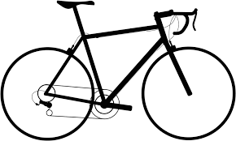

If mountain biking is something that you have only just become involved with, it may be helpful to understand what the basic parts of
a mountain bike are. Obviously, a mountain bike is made up from hundreds of parts ranging from washers to the frame itself. To keep things simple, we have limited our guide to a few of the major components that make up your mountain bike.. What kind of bike are you after?
Follow these five steps to help you zone in on your perfect bike
Having the right bicycle can make a huge difference in your riding experience, but for newcomers, to the sport, it can be difficult to figure out what type of bike is right. Choosing a bike largely comes down to how you plan to use the bike – for example, for commuting, for workouts, or for getting out onto the local trails.